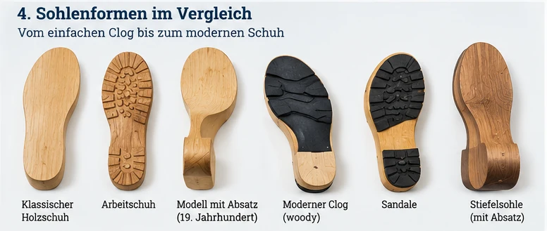
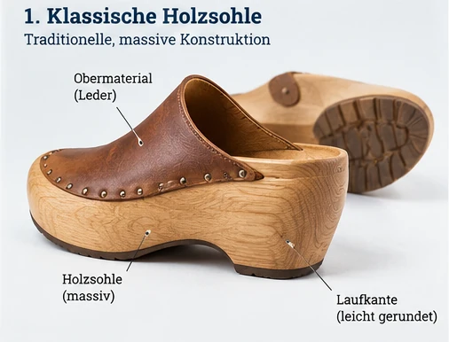
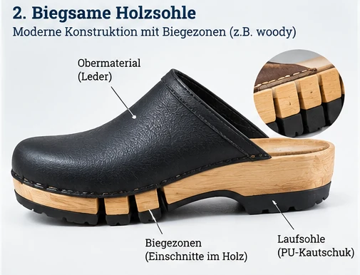
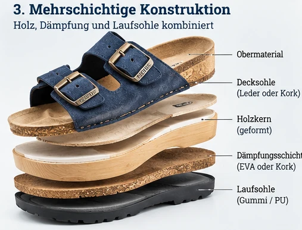
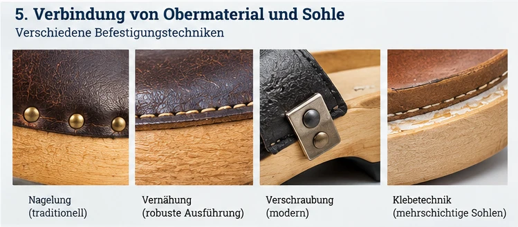

Eine Holzsohle ist eine Konstruktion – nicht nur ein Material
Eine Holzsohle muss den Fuss tragen, mit dem Obermaterial verbunden sein und auf dem Boden funktionieren. Die Bauweise bestimmt mit, wie sich der Schuh beim Gehen verhält, wie er sich abnutzt und ob er repariert werden kann. Wir unterscheiden hier dokumentierte Grundprinzipien, Beispiele heutiger Hersteller und eigene, noch ungeprüfte Ideen.
Wichtig: Die Zeichnungen erklären Konstruktionsprinzipien. Sie sind keine massstäblichen Werkzeichnungen und dürfen nicht als historische Originalbelege verstanden werden.

1. Die massive Holzsohle
Bei einer klassischen Bauweise wird der Sohlenkörper aus einem Stück Holz herausgearbeitet. Die Form von Ferse, Fussbett und Vorderfuss ergibt sich durch Sägen, Schnitzen oder Fräsen. Die Holzart allein entscheidet nicht über den Gehkomfort; entscheidend sind auch Kontur, Sohlenhöhe und das Zusammenspiel mit dem Obermaterial.
Konstruktionsfrage: Wie muss die Unterseite geformt sein, damit ein relativ steifer Sohlenkörper beim Abrollen nicht stört?

2. Beweglichkeit durch Biegezonen
Gezielt angeordnete Einschnitte können die Biegung eines Holzbauteils beeinflussen. Der österreichische Hersteller woody beschreibt biegsame Holzsohlen als Teil seines Schuhkonzepts. Damit ist die grundsätzliche Idee keineswegs nur Zukunftsmusik.
Offene Prüfung: Wie wirken sich Tiefe, Abstand und Richtung der Einschnitte auf Bruchfestigkeit, Lebensdauer und Feuchteempfindlichkeit aus? Unsere Zeichnung zeigt nur das Prinzip und nicht woodys konkrete Konstruktion.

3. Mehrschichtige Sohlen
Ein Sohlenaufbau kann mehrere Aufgaben auf verschiedene Schichten verteilen: ein formgebendes Holzbauteil, eine mögliche Dämpfungsschicht und ein Laufprofil für den Bodenkontakt. Die Verbindung zwischen den Schichten ist dabei ebenso wichtig wie deren Material.
Offene Prüfung: Können sich Schichten lösen? Wie verändert sich die Konstruktion nach wiederholtem Biegen, bei Nässe oder unter Temperaturschwankungen?

4. Verbindung von Obermaterial und Sohle
Ein Schuh besteht nicht allein aus seiner Sohle. Leder, Textilien oder andere Obermaterialien müssen dauerhaft mit dem Holzteil verbunden werden. Je nach Bauweise kommen mechanische Befestigungen und Klebeverbindungen infrage; konkrete historische Techniken müssen jeweils am Original oder durch Quellen nachgewiesen werden.
Offene Prüfung: Wie sicher hält die Verbindung, wo entstehen Druckstellen und lässt sich das Obermaterial später ersetzen?

Historischer Blick: Die Conturenmaschine der Gebrüder Krafft
Für die Industrialisierung ist die Formgebung besonders interessant. Die Gebrüder Krafft in Fahrnau meldeten 1877 das deutsche Patent DE 2492 für eine «Conturenmaschine für Holzsohlen» an. Das ist ein konkreter Anknüpfungspunkt für die Untersuchung maschineller Holzsohlenfertigung. Die genaue technische Wirkungsweise sollten wir anhand der Originalpatentschrift und ihrer Zeichnungen erklären, nicht anhand einer erfundenen Maschinenrekonstruktion.
1887 sind im Krafft-Sortiment auch Lederschuhe mit Holzsohlen belegt. Das macht deutlich, weshalb die Unterscheidung zwischen vollständig hölzernem Schuh und Schuh mit Holzsohle für die Konstruktion so wichtig ist.
Heutige Konstruktionen – worauf es ankommt
| Bauteil | Aufgabe | Prüffrage |
|---|---|---|
| Holzkörper | Form und mögliche tragende Funktion | Rissbildung, Gewicht, Feuchte |
| Biegebereich | Beweglichkeit beim Gehen | Dauerbiegen, Bruchrisiko |
| Fussbett | Auflage und Passform | Druckverteilung, Komfort |
| Verbindung | Halt des Obermaterials | Festigkeit, Reparatur |
| Laufsohle | Bodenkontakt und Verschleissschutz | Rutschverhalten, Abrieb |
5. Reparierbare und modulare Bauweisen
Unsere eigene Idee ist eine Holzsohle, bei der das verschleissende Laufprofil separat ersetzt werden kann. Auch das Obermaterial könnte im Idealfall austauschbar sein. Solche Konzepte sind zunächst Entwurfsfragen und keine nachgewiesenen technischen Lösungen.
Offene Prüfung: Wie lassen sich Bauteile sicher und dauerhaft verbinden, ohne Reparaturen unnötig kompliziert oder teuer zu machen?
Unsere Spinnerei: vom Problem zum Lösungsansatz
Zu steif?
Segmentierte Bereiche oder gezielte Einschnitte prüfen – ohne die notwendige Tragfähigkeit zu verlieren.
Versuch: wiederholte Biegebelastung.Zu schwer?
Eine konstruktiv optimierte Holzstruktur oder einen dünneren Holzkern untersuchen.
Versuch: Gewicht gegen Festigkeit vergleichen.Zu hart beim Auftreten?
Eine getrennte Dämpfungsschicht erproben, statt dem Holz alle Funktionen zuzuweisen.
Versuch: Druck- und Gehkomfort.Zu kurzlebig?
Ein austauschbares Laufprofil und reparierbare Verbindungen entwickeln.
Versuch: Verschleiss, Reparaturzeit und Kosten.Was wir nicht behaupten können
Aus einer Zeichnung allein lässt sich weder Sicherheit noch Tragekomfort ableiten. Ein Patent belegt eine technische Offenbarung, aber nicht automatisch ein Serienprodukt. Ein Herstellerbericht beschreibt eine Praxis, ersetzt jedoch keine unabhängige Prüfung. Für fundierte Aussagen wären Prototypen, Messungen und Erfahrungsberichte nötig.
Quellen und weiterführende Seiten
- woody – Herstellerbeispiel biegsame Holzsohle
- woody – Beschreibung der Fertigung
- Puma: US 11,944,153 B2 – Holzbauteile in Schuhkonstruktionen
- Material & Werkstoffe
- Gestern – historische Entwicklung
- Morgen – Zukunftswerkstatt
- Quellenübersicht
Redaktionsstand: 28. Oktober 2026. Schematische Darstellungen und Projektideen sind ausdrücklich als solche gekennzeichnet.